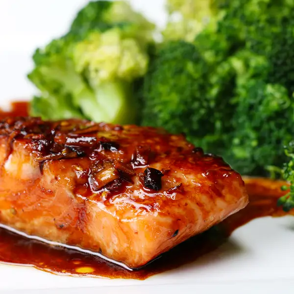

Description
Two words: honey salmon! Sure, it takes a tiny bit of prep work, but once you marinate your salmon, you won’t be able to go back. A simple mix of honey, soy sauce, garlic, and ginger coats and flavors your fish for 30 minutes before you throw it on the pan until the outside is perfectly crispy. Once that’s done, you heat up and reduce some extra marinade to make a thick, to-die-for glaze to pour over your filet. Serve with your favorite veggies or rice and enjoy!
Ingredients
for 2 servings
- 12 oz skinless salmon(340 g)
- 1 tablespoon olive oil
HONEY SOY MARINADE
- 4 cloves garlic, minced
- 2 teaspoons ginger, minced
- ½ teaspoon red pepper
- 1 tablespoon olive oil
- ⅓ cup less sodium soy sauce(80 mL)
- ⅓ cup honey(115 g)
Steps
- Place salmon in a sealable bag or medium bowl.
- In a small bowl or measuring cup, mix marinade ingredients.
- Pour half of the marinade on the salmon. Save the other half for later.
- Let the salmon marinate in the refrigerator for at least 30 minutes.
- In a medium pan, heat oil. Add salmon to the pan, but discard the used marinade. Cook salmon on one side for about 2-3 minutes, then flip over and cook for an additional 1-2 minutes.
- Remove salmon from pan. Pour in remaining marinade and reduce.
- Serve the salmon with sauce and a side of veggies. We used broccoli.
- Enjoy!